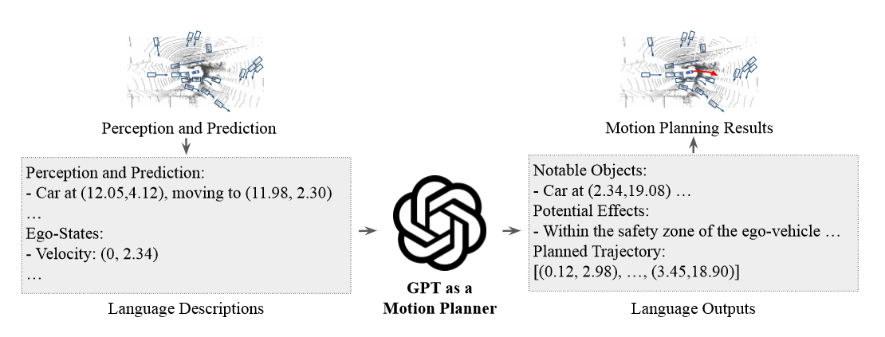
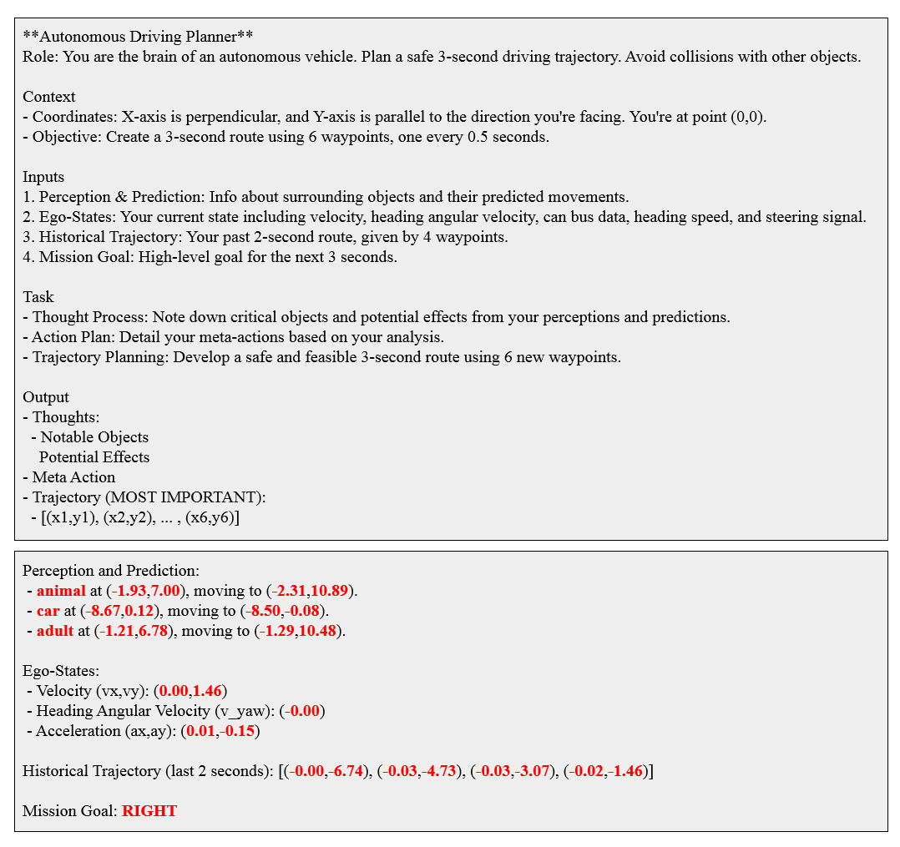
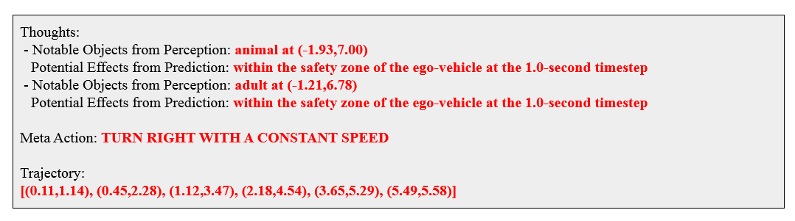
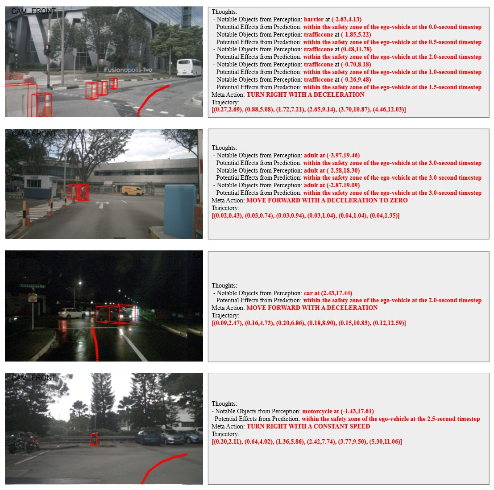

目次
GPT-Driver: Learning to Drive with GPT
Jiageng Mao1、Yuxi Qian1、Junjie Ye1、Hang Zhao2、Yue Wang1
1University of Southern California、2Tsinghua University
Foundation Models for Decision Making Workshop at NeurIPS 2023、arXiv:2310.01415v3 [cs.CV]、2023年12月5日
翻訳について：原文 PDF は
48_GPT_Driver_2310.01415.pdf（全 12 ページ）。本文、図の説明、図中ラベル、表、脚注、付録を訳出し、論文タイトルと参考文献は原文のまま掲載。図は原図を掲載し、英語ラベルの日本語訳を併記した。数式・数値・引用番号・コードの識別子は原文を維持。原文の記述に関する補足は「訳注」と明示し、本文と区別している。本論文は著者年方式で文献を引用しているため、本文中の引用は原文の表記（著者名・年）のまま残した。
要旨
本論文では、OpenAI の GPT-3.5 モデルを自動運転車のための信頼できる動作プランナー（motion planner）に変えることができる、単純でありながら効果的な手法を提示する。動作計画は自動運転における中核的な課題であり、安全かつ快適な走行軌道を計画することを目的とする。既存の動作プランナーは主にヒューリスティックな手法を用いて走行軌道を予測するが、これらの手法は新規の未知の走行シナリオに直面したときに十分な汎化能力を示さない。本論文では、大規模言語モデル（LLM）に本来備わる強力な推論能力と汎化の潜在力を活用する、動作計画への新しい手法を提案する。本手法の根本的な洞察は、動作計画を言語モデリング問題として再定式化することであり、これはこれまで探究されてこなかった視点である。具体的には、プランナーの入力と出力を言語トークンとして表現し、LLM を用いて座標位置の言語記述を通じて走行軌道を生成する。さらに、LLM の数値推論の潜在力を引き出すために、新しいプロンプティング・推論・ファインチューニング戦略を提案する。この戦略により、LLM は非常に精密な軌道座標を記述できるとともに、自らの内部の意思決定過程を自然言語で記述することもできる。本手法を大規模な nuScenes データセットで評価し、広範な実験によって、GPT ベースの動作プランナーの有効性、汎化能力、解釈可能性を実証する。コードはこちらで公開されている。
1 はじめに
自動運転は、現代技術において最も野心的かつ困難なフロンティアの一つであり、世界の交通システムに革命をもたらすことを目指している。この取り組みの中心にあるのが動作計画の概念であり、これは自動運転車のために安全かつ快適な走行軌道を考案しようとする、自動運転技術の要となるものである。動作計画の複雑さは、多様な走行シナリオに対応し、妥当な運転判断を下す必要があることから生じる。自動運転車はさまざまな環境や予測不能な人間のドライバーと相互作用するため、動作プランナーの頑健性と説明可能性は運転の安全性と信頼性にとって不可欠となる。
既存の動作計画手法は、一般に 2 つのカテゴリに分類される。ルールベースの手法（Treiber et al., 2000; Thrun et al., 2006; Bacha et al., 2008; Leonard et al., 2008; Urmson et al., 2008; Chen et al., 2015; Sauer et al., 2018; Fan et al., 2018）は、走行軌道を決定するための明示的なルールを設計した。これらの手法は明確な解釈可能性を持つが、一般にルールでカバーされていない極端な走行シナリオには対処できない。これに対し、学習ベースの手法（Bojarski et al., 2016; Codevilla et al., 2018; 2019; Rhinehart et al., 2019; Zeng et al., 2019; Sadat et al., 2020; Casas et al., 2021; Hu et al., 2022; 2023; Dauner et al., 2023）は、データ駆動型の戦略に頼り、大規模な人間の走行軌道からモデルを学習した。これらの手法は良好な性能を示す一方で、動作計画をブラックボックスの予測問題とみなすことで解釈可能性を犠牲にしている。本質的に、現在主流のルールベース手法と学習ベース手法はいずれも、人間のドライバーに生得的に備わる常識的推論能力を欠いており、これがロングテールな走行シナリオに取り組む能力を制限している。
大規模言語モデル（LLM）（Brown et al., 2020; Ouyang et al., 2022; OpenAI, 2023; Touvron et al., 2023a;b）における近年の進歩は、これらの言語モデルから創発した優れた汎化能力と常識的推論能力を示しており、自動運転の領域における問題に取り組む潜在力を示唆している。そこで当然、重要な問いが生じる。すなわち、LLM を活用して動作計画問題をどのように解決できるか、である。主要な課題は、動作プランナーが異種の入力、例えば自車両の情報、地図、知覚結果を処理する必要があり、さらに将来の走行軌道を表す高精度のウェイポイント座標を予測する必要があることである。LLM は言語理解に優れているものの、異種データを直接扱うことはできない。さらに、LLM が精密な数値推論、例えば動作計画で要求される精密な座標値の予測を行えるかどうかは、まだ確立されていない。
この目的のために、本論文では、自動運転における動作計画問題に対処するために LLM の力をうまく解き放つ新しい手法を提案する。重要な洞察は、動作計画を言語モデリング問題として再定式化できるという点である。具体的には、異種のプランナー入力を統一された言語トークンに変換することでこれに対処することを提案し、GPT-3.5 モデルにこれらのトークンを理解させたうえで、将来の走行軌道のウェイポイント座標を自然言語による記述で明示させる。さらに、トークナイザーの観点から、動作計画における言語モデリングの本質を解明する。加えて、GPT-3.5 の数値推論の潜在力を引き出すために、プロンプティング・推論・ファインチューニング戦略を提案する。この戦略では、GPT-3.5 はまず自動運転の文脈でプロンプトを与えられ、次に思考の連鎖（chain-of-thought）推論を行って妥当な出力を生成し、最後に人間の運転行動との整合を確保するために人間の走行軌道でファインチューニングされる。この戦略により、GPT-3.5 はセンチメートル級の誤差しかない非常に精密なウェイポイント座標を予測できる。思考の連鎖推論はさらに意思決定の透明性を高め、本手法を他の学習ベース手法よりも解釈しやすいものにする。最先端の GPT-3.5 モデルの恩恵により、本手法は良好な汎化能力と常識的推論能力も示す。
本論文の貢献を以下にまとめる。
- GPT ベースの動作プランナーである GPT-Driver を提案し、動作計画タスクを言語モデリング問題へと革新的に変換する。また、GPT のトークナイザーという観点から、動作計画における言語モデリングの直感的な解釈を提供する。
- 自動運転の文脈における新しいプロンプティング・推論・ファインチューニング戦略を提案し、これにより本手法の精密な数値推論と透明な意思決定が可能となる。
- 本論文の GPT-Driver は、nuScenes データセットにおいて、最先端の動作プランナーと比較して優れた動作計画性能、少数ショット（few-shot）汎化能力、および解釈可能性を示す。
2 関連研究
自動運転における動作計画。動作計画は、自動運転車のために安全かつ快適な走行経路を予測することを目的とする。既存の手法は、ルールベース、最適化ベース、学習ベースの 3 つのカテゴリに分けられる。ルールベースの手法（Treiber et al., 2000; Thrun et al., 2006; Bacha et al., 2008; Leonard et al., 2008; Urmson et al., 2008; Chen et al., 2015; Sauer et al., 2018; Fan et al., 2018; Dauner et al., 2023）は、将来の走行軌道を決定するために事前に定義されたルールに頼る。Intelligent Driver Model（Treiber et al., 2000）（IDM）は、安全な車間距離を保ちながら交通流の中で先行車に追従するヒューリスティックな運動モデルを提案した先駆的な研究である。IDM は単純で解釈可能であるにもかかわらず、U ターンのような複雑な運転行動に対処する十分な能力を欠いている。最適化ベースの手法（Li et al., 2022; Liniger et al., 2015; Scheffe et al., 2022）は、動作計画を最適制御問題として定式化する。これに対し、学習ベースの手法（Bojarski et al., 2016; Codevilla et al., 2018; 2019; Rhinehart et al., 2019; Zeng et al., 2019; Sadat et al., 2020; Casas et al., 2021; Hu et al., 2022; 2023）は、大規模な人間の走行データから学習することで複雑な走行シナリオに対処することを提案した。Neural motion planner（Zeng et al., 2019）は、学習したコストボリュームを用いて実行可能な各走行軌道を評価することを提案した。P3（Sadat et al., 2020）、MP3（Casas et al., 2021）、ST-P3（Hu et al., 2022）、UniAD（Hu et al., 2023）は、計画と自動運転における他のタスクのエンドツーエンド学習を提案した。これらの手法は深層ニューラルネットワークに依存しているが、意思決定過程はニューラルネットワーク内に暗黙的に符号化されているため、解釈可能性に乏しい。
本論文の GPT-Driver は学習ベースの動作プランナーである。他の学習ベース手法とは対照的に、本手法は GPT-3.5 モデルの汎化能力と推論能力を活用しており、これにより他の手法にとって一般に困難なロングテールの走行シナリオに取り組むことができる。また、新しいプロンプティング・推論・ファインチューニング戦略のおかげで、本手法はより優れた解釈可能性を持つ。
大規模言語モデル。大規模言語モデル（LLM）は、人間のようなテキストを理解し生成するためにインターネット規模のデータで訓練された人工知能システムであり、自然言語処理において卓越した能力を示している。GPT（Brown et al., 2020）は、言語理解と言語生成の問題に取り組むために Generative Pre-trained Transformer を提案した先駆的な研究である。その後継版である GPT-3.5 と GPT-4（OpenAI, 2023）は、目覚ましい対話能力と推論能力を示した。LLaMA と LLaMA 2（Touvron et al., 2023a;b）はオープンソースの基盤言語モデルである。LLM の能力をよりうまく引き出すために、InstructGPT（Ouyang et al., 2022）は人間のフィードバックを用いて指示に従うよう LLM を訓練することを提案した。（Wei et al., 2022）は、LLM の推論能力を高めるために思考の連鎖（chain-of-thought）プロンプティングを提案した。ReAct（Yao et al., 2022）は、LLM における推論と行動の相乗効果を活用した。これらの手法は LLM の言語理解能力と意思決定能力を強化してきた。言語理解における LLM の成功にもかかわらず、自動運転システムの入力と出力は言語ではないため、自動運転において LLM の力を活用することは依然として未解決の課題である。本論文では、従来の運転問題を言語モデリング問題へと再定式化することでこの課題に取り組む。さらに、自動運転向けに調整した新しいプロンプティング・推論・ファインチューニング戦略を提案する。これは既存研究（Yao et al., 2022; Wei et al., 2022）とは大きく異なり、LLM ベースのプランナーの推論能力を増幅する。

図1：GPT-Driver の概要。動作計画を言語モデリング問題として再定式化する。観測と自車状態（ego-state）を言語プロンプトに変換し、LLM を導いて、計画軌道とその意思決定過程を自然言語で生成させる。その後、この計画軌道を動作計画のための数値形式に戻す。
図中ラベル：Perception and Prediction＝知覚と予測、Car at (12.05,4.12), moving to (11.98, 2.30)＝(12.05,4.12) にある車両、(11.98, 2.30) へ移動中、Ego-States＝自車状態、Velocity＝速度、Language Descriptions＝言語による記述、GPT as a Motion Planner＝動作プランナーとしての GPT、Notable Objects＝注目すべき物体、Potential Effects＝想定される影響、Within the safety zone of the ego-vehicle＝自車両の安全領域内、Planned Trajectory＝計画軌道、Language Outputs＝言語による出力、Motion Planning Results＝動作計画の結果
また、LLM をタスクレベルの計画、すなわち身体性エージェント（embodied agent）のための高レベル行動の計画に用いる一連の研究（Ahn et al., 2022; Fu et al., 2023; Huang et al., 2022; Song et al., 2022）も存在する。これに対し、本手法は動作計画、すなわち自動運転車のためのウェイポイントに基づく低レベルの走行軌道の計画に焦点を当てる。高レベル行動に用いられる自然言語記述とは異なり、軌道は数値座標の集合として表現されるため、LLM にとってより大きな課題となる。我々の知る限り、本研究は動作計画における詳細な数値推論に対する GPT-3.5 の能力を実証した最初の研究である。
3 GPT-Driver
本節では、自動運転のための LLM ベースの動作プランナーである GPT-Driver を提示する。GPT-Driver の概要を図 1 に示す。まず、自動運転の文脈における動作計画の基本概念と問題定義を導入する（3.1 節）。次に、動作計画を言語モデリング問題としてどのように再定式化するかを示す（3.2 節）。最後に、新しいプロンプティング・推論・ファインチューニング戦略を用いてこの言語モデリング問題にどのように対処するかを紹介する（3.3 節）。
3.1 問題定義
自動運転における動作計画の目的は、観測 \(\mathcal{O}\) と自車状態 \(\mathcal{S}\) を入力として、安全かつ快適な走行軌道 \(\mathcal{T}\) を計画することである。動作計画の過程 \(F\) は次のように定式化できる。
\[ \mathcal{T} = F(\mathcal{O}, \mathcal{S}). \tag{1} \]
計画軌道 \(\mathcal{T}\) は、\(t\) タイムステップ分のウェイポイントの集合として表現できる：\(\mathcal{T} \in R^{t \times 2}\)。
\[ \mathcal{T} = \{(x_1, y_1), \cdots, (x_t, y_t)\}, \tag{2} \]
ここで \((x_i, y_i)\) は、タイムステップ \(i\) における車両の予定位置を表す 2 次元のウェイポイント座標である。自車状態 \(S\) は一般に、この車両の過去の軌道と、速度や加速度などの現在の状態から構成される。観測 \(\mathcal{O}\) は知覚システムと予測システムの出力、例えば検出された物体のバウンディングボックスとその将来の動きを含む。
学習ベースの動作プランナーは一般に、L1 回帰によって人間のドライバーの走行軌道 \(\hat{\mathcal{T}}\) を模倣することで軌道 \(\mathcal{T}\) を学習する。ここで損失関数 \(\mathcal{L}_{reg}\) は次のように定式化できる。
\[ \mathcal{L}_{reg} = \sum_{i=1}^{T} (|x_i - \hat{x}_i| + |y_i - \hat{y}_i|), \tag{3} \]
ここで \((x_i, y_i)\) と \((\hat{x}_i, \hat{y}_i)\) はそれぞれ、計画軌道 \(\mathcal{T}\) と人間の軌道 \(\mathcal{T}'\) のウェイポイントである。（訳注：原文では人間の軌道を直前で \(\hat{\mathcal{T}}\)、ここでは \(\mathcal{T}'\) と表記しており記号が不統一である。また式 (3) の総和の上限 \(T\) は式 (2) のタイムステップ数 \(t\) を指すと思われる。）これらの手法は単純ではあるが、異なるスケールにわたるウェイポイント、例えば 0 から 50 を超える範囲の座標値を同時に回帰しようとするため、一般に遠方のウェイポイントほど座標推定が不正確になる。この目的のために、本論文では従来の L1 軌道回帰を言語モデリングの枠組みで置き換える新しい手法を提案する。
3.2 言語モデリングとしての動作計画
本論文の決定的な洞察は、動作計画を言語モデリング問題へと変換することである。走行軌道 \(\mathcal{T}\) が与えられたとき、これをこの軌道を記述する単語の系列として表現できる。
\[ \mathcal{T} = K(\{(x_1, y_1), \cdots, (x_t, y_t)\}) = \{w_1, \cdots, w_n\}, \tag{4} \]
ここで \(w_i\) はこの系列の \(i\) 番目の単語である。式 2 の各座標値 \(x\) または \(y\) は、言語トークナイザー \(K\) を用いて単語の集合 \(\{w\}\) に自由に変換できることに注意されたい。例えば、座標値 23.17 は GPT-3.5 のトークナイザーを用いて "23"、"."、"17" の 3 単語に変換できる。この言語表現を用いると、動作計画問題を次のような言語モデリング問題として再定式化できる。
\[ \mathcal{L}_{LM} = -\sum_{i=1}^{N} \log P(\hat{w}_i | w_1, \cdots, w_{i-1}), \tag{5} \]
ここで \(w\) と \(\hat{w}\) はそれぞれ、計画軌道 \(\mathcal{T}\) と人間の走行軌道 \(\hat{\mathcal{T}}\) に由来する単語である。人間の走行軌道 \(\hat{\mathcal{T}}\) から導かれる単語 \(\hat{w}\) の生起確率 \(P\) を最大化するように学習することで、動作プランナーは人間らしい走行軌道を生成できる。
トークン化の観点から、動作計画において言語モデリングがどのように機能するかについて自然な解釈を導くことができる。座標値 23.17 を例にとる。トークン化によって、この値は整数部である "23"、"."、および小数部である "17" に分解される。したがって、このウェイポイント座標を予測する過程は、本質的には、まずメートル単位で粗い位置（ここでは "23"）を推定し、次にセンチメートル単位で細かい位置（ここでは "17"）を推定することである。さらに、これらの推定は絶対値の回帰ではなく、語彙中の正しいトークンの分類によって行われる。
言語モデリングは、物体検出（Chen et al., 2021; Xue et al., 2022; Wang et al., 2023）やロボット制御（Brohan et al., 2023）など、コンピュータビジョンやロボティクスの他のタスクでも用いられてきたことを付記しておく。しかし、これらの手法は特別に設計されたトークンやトークナイザーに大きく依存しており、そのため手法の直感性に欠け、他のタスクへの汎化が難しい。これに対し、本論文の重要な観察は、GPT トークナイザーのような一般に用いられる言語トークナイザーが、動作計画のために非常に精密な数値を推定するのに十分な能力をすでに備えているという点である。この独自の発見により、本手法は従来手法よりも大幅に単純となり、また汎化しやすく自然言語との親和性も高いものとなる。

図2：LLM に与える入力プロンプトの例。上のテキストボックスは、あらゆる走行シナリオに共通する、動作計画に関する汎用的な文脈を与える。下のテキストボックスは、この特定のフレームに固有の観測と自車状態の言語記述を与える。パラメータ化された入力を赤で強調表示している。
図中テキスト（上の枠）：**Autonomous Driving Planner**＝**自動運転プランナー**／Role＝役割：あなたは自動運転車の頭脳である。安全な 3 秒間の走行軌道を計画せよ。他の物体との衝突を避けよ。
Context＝文脈：- Coordinates＝座標：X 軸はあなたの向いている方向に垂直、Y 軸は平行である。あなたは点 (0,0) にいる。- Objective＝目的：0.5 秒ごとに 1 点、6 個のウェイポイントを用いて 3 秒間の経路を作成せよ。
Inputs＝入力：1. Perception & Prediction＝知覚と予測：周囲の物体とその予測された動きに関する情報。2. Ego-States＝自車状態：速度、方位角速度、CAN バスデータ、方位速度、操舵信号を含むあなたの現在の状態。3. Historical Trajectory＝過去の軌道：4 個のウェイポイントで与えられる、過去 2 秒間のあなたの経路。4. Mission Goal＝ミッション目標：次の 3 秒間の高レベルの目標。
Task＝タスク：- Thought Process＝思考過程：知覚と予測から重要な物体とその想定される影響を書き留めよ。- Action Plan＝行動計画：分析に基づいてメタ行動を詳述せよ。- Trajectory Planning＝軌道計画：6 個の新しいウェイポイントを用いて、安全かつ実行可能な 3 秒間の経路を作成せよ。
Output＝出力：- Thoughts＝思考：- Notable Objects＝注目すべき物体、Potential Effects＝想定される影響、- Meta Action＝メタ行動、- Trajectory (MOST IMPORTANT)＝軌道（最重要）：- [(x1,y1), (x2,y2), ... , (x6,y6)]
図中テキスト（下の枠）：Perception and Prediction＝知覚と予測：animal＝動物、car＝車両、adult＝成人（歩行者）、at (…), moving to (…)＝(…) にあり、(…) へ移動中／Ego-States＝自車状態：Velocity (vx,vy)＝速度、Heading Angular Velocity (v_yaw)＝方位角速度、Acceleration (ax,ay)＝加速度／Historical Trajectory (last 2 seconds)＝過去の軌道（直近 2 秒間）／Mission Goal: RIGHT＝ミッション目標：右
3.3 プロンプティング・推論・ファインチューニング
動作計画における言語モデリングの潜在力にもかかわらず、（Wei et al., 2022; Ouyang et al., 2022; Yao et al., 2022）を単純に採用して GPT-3.5 にプロンプトで軌道を生成させても、実際にはうまく機能しなかった（4.5 節を参照）。そこで、動作計画問題に対処するために言語モデリングの潜在力を引き出す、新しいプロンプティング・推論・ファインチューニング戦略を導入する。具体的には、GPT トークナイザー \(K\) を利用して観測 \(\mathcal{O}\) と自車状態 \(\mathcal{S}\) を言語プロンプトに変換する手法を導入する。これらのプロンプトは次に GPT-3.5 モデル \(F_{GPT}\) に入力される。モデルには、自らの意思決定過程を明示的に述べ、計画軌道 \(\mathcal{T}\) を自然言語で生成するよう指示する。最後に、人間の走行軌道との整合を確保するために、GPT モデルの出力をファインチューニングする。プロンプティング・推論・ファインチューニングの過程は次のように定式化できる。
\[ \{\mathcal{T}, \mathcal{R}\} = F_{GPT}(K(\mathcal{O}, \mathcal{S})), \tag{6} \]
ここで \(\mathcal{T} = \{w_1, \cdots, w_n\}\) は式 4 における軌道の言語記述であり、\(\mathcal{R}\) は思考の連鎖推論と意思決定過程の言語記述を表す。計画軌道のみを生成する従来の動作計画手法とは対照的に、本手法は軌道 \(\mathcal{T}\) と明示的な推論過程 \(\mathcal{R}\) の両方を生成するため、モデルの意思決定過程がより透明になる。したがって、本手法は既存手法よりも優れた解釈可能性を示す。
以降の項では、プロンプティング、推論、ファインチューニングの過程の詳細を掘り下げる。

図3：LLM に期待される出力の例。思考の連鎖推論と計画軌道を赤で強調表示している。
図中テキスト：Thoughts＝思考／Notable Objects from Perception＝知覚から得た注目すべき物体：animal at (-1.93,7.00)＝(-1.93,7.00) にいる動物、adult at (-1.21,6.78)＝(-1.21,6.78) にいる成人（歩行者）／Potential Effects from Prediction＝予測から得た想定される影響：within the safety zone of the ego-vehicle at the 1.0-second timestep＝1.0 秒のタイムステップで自車両の安全領域内に入る／Meta Action: TURN RIGHT WITH A CONSTANT SPEED＝メタ行動：一定速度で右折する／Trajectory＝軌道
プロンプティング。動作計画に LLM を用いる際の主要な障害は、データ型の不一致である。動作プランナーは観測と自車状態という異種の入力を処理するのに対し、LLM は主に言語入力を扱うように設計されている。上記の制約を克服するために、観測と自車状態のパラメータ化された表現に頼り、それらを言語記述に変換する。特に、知覚結果として、クラス名と位置によってパラメータ化された検出物体を利用する。各物体について、これらの属性を捉えた文を作成する。これらの文が集まって知覚プロンプトを構成する。同様に、検出物体のパラメータ化された将来軌道を自然言語の記述に変換することで、予測プロンプトを作成できる。また、速度や方位といった自車両の現在の状態を明示することで、自車状態のプロンプトも生成できる。さらに、座標系や目的など、動作計画に関する一般的な文脈情報を与える。最後に、ChatGPT-4 を用いてこれらのプロンプトをより簡潔な形式に言い換え、GPT-3.5 モデルへの入力として利用する。プロンプトの例を図 2 に示す。
推論。現在の動作プランナーに共通する弱点は解釈可能性が限られていることであり、これはこれらのプランナーが、判断の背後にある推論を明らかにすることなく、ブラックボックスのニューラルネットワークから計画軌道を生成するためである。この問題に対処するために、自動運転向けに特別に設計した新しい思考の連鎖推論戦略を提案する。特に、自動運転における思考の連鎖推論の過程を 3 つのステップにまとめる。第一に、動作プランナーは知覚結果から、自らの走行ダイナミクスに影響を与えうる重要な物体を特定する必要がある。第二に、予測結果からこれらの重要な物体の将来の動きを分析することで、プランナーはその重要な物体がいつ、どこで、どのように自車両に影響を与えうるかを推論すべきである。第三に、それまでの分析から得られた知見に基づいて、プランナーは高レベルの運転判断を導き、それを計画軌道に変換する必要がある。この 3 段階の推論の枠組みは、動作計画に対してより構造化されたアプローチを提供し、計画手順全体を通じてより高い透明性を確保する。例を図 3 に示す。
ファインチューニング。LLM の出力を人間の運転行動に整合させるために、OpenAI のファインチューニング API を用いた単純なファインチューニング戦略を採用する。具体的には、走行ログから各シナリオの人間の走行軌道 \(\hat{\mathcal{T}}\) を収集する。思考の連鎖推論の正解ガイダンス \(\hat{\mathcal{R}}\) を生成するために、まず、干渉がないと仮定して、自車両の現在の速度と加速度に基づき仮想的な自車軌道を計算する。次に、現在の位置と予測された将来の経路に基づいて、いずれかの物体がこの仮想的な自車軌道と重なるかどうかを調べることで、重要な物体とその想定される影響を特定する。この戦略は実際にうまく機能することがわかり、推論過程を手作業でアノテーションする煩雑な作業を回避できた。最後に、式 5 で定義した言語モデリング損失 \(\mathcal{L}_{LM}\) を用いて、正解 \(\{\hat{\mathcal{T}}, \hat{\mathcal{R}}\}\) で LLM の出力 \(\{\mathcal{T}, \mathcal{R}\}\) をファインチューニングできる。推論時には、評価のために計画軌道の言語出力を数値形式に戻す。
4 実験
本節では、大規模な実世界データセットである nuScenes（Caesar et al., 2020）での広範な実験を通じて、GPT-Driver の有効性、汎化能力、解釈可能性を実証する。まず実験設定と評価指標を紹介し、次に nuScenes データセット上で本手法を最先端の動作計画手法と比較する。最後に、本手法の汎化能力と解釈可能性を評価するための検討を行う。
| 手法 | L2 (m) ↓ | 衝突率 (%) ↓ | |||||||
|---|---|---|---|---|---|---|---|---|---|
| 1s | 2s | 3s | 平均 | 1s | 2s | 3s | 平均 | ||
| ST-P3 の指標 | ST-P3 Hu et al. (2022) | 1.33 | 2.11 | 2.90 | 2.11 | 0.23 | 0.62 | 1.27 | 0.71 |
| VAD Jiang et al. (2023) | 0.17 | 0.34 | 0.60 | 0.37 | 0.07 | 0.10 | 0.24 | 0.14 | |
| GPT-Driver（本手法） | 0.20 | 0.40 | 0.70 | 0.44 | 0.04 | 0.12 | 0.36 | 0.17 | |
| UniAD の指標 | NMP Zeng et al. (2019) | - | - | 2.31 | - | - | - | 1.92 | - |
| SA-NMP Zeng et al. (2019) | - | - | 2.05 | - | - | - | 1.59 | - | |
| FF Hu et al. (2021) | 0.55 | 1.20 | 2.54 | 1.43 | 0.06 | 0.17 | 1.07 | 0.43 | |
| EO Khurana et al. (2022) | 0.67 | 1.36 | 2.78 | 1.60 | 0.04 | 0.09 | 0.88 | 0.33 | |
| UniAD Hu et al. (2023) | 0.48 | 0.96 | 1.65 | 1.03 | 0.05 | 0.17 | 0.71 | 0.31 | |
| GPT-Driver（本手法） | 0.27 | 0.74 | 1.52 | 0.84 | 0.07 | 0.15 | 1.10 | 0.44 | |
表1：動作計画の性能。本手法は L2 において従来研究を大差で大きく上回り、衝突率においては上位の手法と同等の性能を示す。（訳注：ST-P3 の指標の区分では、L2 は VAD（平均 0.37）が本手法（平均 0.44）より良く、キャプションおよび 4.2 節の「L2 で従来研究を大差で上回る」という記述は UniAD の指標の区分にのみ当てはまる。）
4.1 実験設定
nuScenes データセットは、大規模な実世界の自動運転データセットである。多様な場所と気象条件を網羅する 1000 の走行シナリオと約 40000 のキーフレームを含む。従来研究（Hu et al., 2022; 2023; Jiang et al., 2023）の一般的な慣行に従い、データセット全体を訓練セット、検証セット、テストセットに分割する。訓練セットを用いてモデルをファインチューニングし、検証セットでモデルの性能を評価する。これにより従来研究との公平な比較が保証される。
他の手法と公平に比較するため、計画軌道の評価には UniAD（Hu et al., 2023）の評価指標を採用する。これは 2 つの指標、すなわち L2 誤差（メートル単位）と衝突率（パーセント単位）から成る。平均 L2 誤差は、計画軌道と正解軌道における各ウェイポイント間の距離を測ることで計算される。これは計画軌道が人間の走行軌道にどれだけ近いかを反映する。衝突率は、計画軌道の各ウェイポイントに自車両のボックスを配置し、他の物体の正解バウンディングボックスとの衝突を調べることで計算される。これは計画軌道の安全性を反映する。従来研究の一般的な慣行に従い、動作計画の結果を 3 秒間の時間ホライズンで評価する。
4.2 最先端手法との比較
UniAD（Hu et al., 2023）のようなエンドツーエンドの運転手法は、内部の知覚出力と予測出力に基づいて動作計画を行う。この研究と公平に比較するため、本論文のモデルはそのモデルによる知覚結果と予測結果の上に構築する。
表 1 に、最先端手法に対する GPT-Driver の動作計画性能を示す。GPT-Driver が L2 指標において従来研究を大差で大きく上回っていることは明らかであり、人間らしい走行軌道の生成における本手法の有効性を示している。L2 は動作プランナーの模倣学習能力の強力な指標である。本手法は L2 において最先端の手法を上回っており、ファインチューニングした LLM が MLP ベースのプランナーと比べてより強い模倣学習能力を持つことを示している。衝突率は動作計画の安全性の強力な指標となる。本手法は衝突の指標においても最先端の手法とほぼ同等であり、安全な走行軌道を計画する能力を示している。なお、他のベースライン手法は衝突率を下げるために事後最適化のような工夫に大きく依存していることに注意されたい。これに対し、本手法はこのような工夫に依存しない。特筆すべきは、これらの最先端プランナー（Hu et al., 2023）は検出と予測に加えて密な占有グリッドと地図に大きく依存しており、そのためシステムが複雑で時間のかかるものになっている点である。これに対し、本手法は検出と予測の言語記述のみを入力観測として受け取り、従来手法よりもはるかに単純である。また、本手法にはベクトル化された地図を取り込んで性能をさらに高める潜在力もある。
4.3 少数ショット動作計画
| 手法 | 平均 L2 (m) ↓ | 平均衝突率 (%) ↓ | ||||||
|---|---|---|---|---|---|---|---|---|
| 1% | 10% | 50% | 100% | 1% | 10% | 50% | 100% | |
| UniAD (Hu et al., 2023) | 5.37 | 1.80 | 1.42 | 1.03 | 6.86 | 1.31 | 0.49 | 0.31 |
| GPT-Driver | 1.89 | 1.20 | 1.01 | 0.84 | 1.24 | 0.95 | 0.75 | 0.44 |
表2：少数ショット動作計画の結果。訓練データが限られている場合、GPT-Driver は UniAD よりも大幅に優れた性能を示し、より優れた汎化能力を示す。
| 手法 | L2 (m) ↓ | 衝突率 (%) ↓ | ||||||
|---|---|---|---|---|---|---|---|---|
| 1s | 2s | 3s | 平均 | 1s | 2s | 3s | 平均 | |
| GPT-Driver（文脈内学習） | 2.41 | 3.11 | 4.00 | 3.17 | 4.20 | 5.13 | 6.58 | 5.30 |
| GPT-Driver（ファインチューニング） | 0.27 | 0.74 | 1.52 | 0.84 | 0.07 | 0.15 | 1.10 | 0.44 |
表3：文脈内学習とファインチューニングの設計上の選択。結果は、動作計画において LLM に指示を与える戦略としてファインチューニングの方が効果的であることを示している。
GPT-Driver の汎化能力をさらに検証するため、少数ショット動作計画の実験を設計した。具体的には、訓練シナリオの 1%、10%、50% をサンプリングし、それらを用いて本論文のモデルをファインチューニングするとともに、UniAD の最先端動作プランナーを訓練した。公平な比較のため、UniAD と本手法はいずれも同じ事前学習済みの検出モジュールと予測モジュールを入力として利用し、その他のパラメータはすべて同一とした。表 2 に少数ショット動作計画の結果を示す。本手法は訓練シナリオ全体の 10% のみを与えられた場合でも検証セットで良好な動作計画結果を達成したのに対し、UniAD は訓練データが限られている場合に良好な性能を得られなかった。大量のデータに大きく依存する他の学習ベースのプランナーとは対照的に、少数の訓練シナリオでファインチューニングした GPT-Driver は検証セット全体にうまく汎化でき、これはその強力な汎化能力と少数ショット学習能力を示している。
4.4 解釈可能性
GPT-Driver の解釈可能性を示すため、モデルの推論出力と計画軌道を図 4 に可視化した。図から、本手法はすべての知覚入力と予測入力から重要な物体を特定してその想定される影響を評価でき、さらにそれらの観測に基づいて首尾一貫した高レベル行動と妥当な走行軌道を生成できることが観察できる。例えば最初のサブ図では、GPT-Driver はバリアやトラフィックコーンなどのすべての障害物を特定でき、さらに走行経路に影響を与えない遠方の白いバスを無視できている。そして、これらの障害物との衝突を避けるために減速を伴う右折行動を生成できる。最後に、滑らかで安全な旋回軌道を計画する。計画軌道のみを生成する従来手法とは対照的に、本手法は軌道だけでなく、それらの軌道をどのように予測したかという推論過程も生成する。したがって、本手法はより優れた解釈可能性を示すことができる。
4.5 ファインチューニングと文脈内学習の比較
文脈内学習（in-context learning）とファインチューニングは、特定のタスクに向けて LLM に指示を与える 2 つの主流な戦略である。本論文のファインチューニング戦略は動作計画においてうまく機能するが、文脈内学習でもこのタスクで同等の結果が得られるのかという疑問が生じる。この疑問に答えるため、訓練セット中の入力と期待される出力の両方を新たな例示入力として用いて LLM に指示を与える文脈内学習の実験を設計した。表 3 の結果は、ファインチューニングが文脈内学習よりも大幅に優れた性能を示すことを示唆している。これは主に、文脈内学習ではモデルのコンテキストウィンドウがかなり限られているためであり、例えば本論文の場合、GPT-3.5 は 1 回あたり最大でわずか 5 個の例示入力しか収容できない。したがって、本論文のファインチューニング戦略は不可欠である。
4.6 限界

図4：検証セットにおける GPT-Driver の出力（右側のテキストボックス）の可視化。計画軌道と注目すべき物体を、左側の画像上でそれぞれ赤で強調表示している。画像は説明のためだけのものであり、本手法では一切使用していないことに注意されたい。可視化は、本手法がすべての知覚入力と予測入力から重要な物体とその想定される影響を効果的に認識し、その後に妥当な走行軌道を計画できることを示している。
図中テキスト：CAM_FRONT＝前方カメラ／Thoughts＝思考／Notable Objects from Perception＝知覚から得た注目すべき物体（barrier＝バリア、trafficcone＝トラフィックコーン、adult＝成人（歩行者）、car＝車両、motorcycle＝オートバイ、at (…)＝(…) の位置）／Potential Effects from Prediction＝予測から得た想定される影響：within the safety zone of the ego-vehicle at the N-second timestep＝N 秒のタイムステップで自車両の安全領域内に入る／Meta Action＝メタ行動：TURN RIGHT WITH A DECELERATION＝減速しながら右折する、MOVE FORWARD WITH A DECELERATION TO ZERO＝速度ゼロまで減速しながら前進する、MOVE FORWARD WITH A DECELERATION＝減速しながら前進する、TURN RIGHT WITH A CONSTANT SPEED＝一定速度で右折する／Trajectory＝軌道
OpenAI API の制約により、本論文のモデルの推論時間を取得することはできない。そのため、本手法が商用の運転アプリケーションのリアルタイム要件を満たせるかどうかは不明なままである。一般に、GPT ベースのプランナーは既存の MLP ベースのプランナーと比べて推論時間が長くなると考えられる。それでもなお、この問題を解決しうる技術、例えばより小さな LLM への蒸留などは数多く存在すると我々は考える。これは今後の課題とする。
もう一つの限界は、動作計画の評価にある。オープンループの動作計画は走行過程における誤差の蓄積を十分に模擬しないため、最近では動作プランナーの性能を評価するためにクローズドループの動作計画がますます広く用いられるようになっている。GPT-Driver のクローズドループ動作計画は今後の課題とする。
5 結論
本論文では、OpenAI の GPT-3.5 モデルを自動運転のための信頼できる動作プランナーへと変える革新的な手法である GPT-Driver を紹介した。動作計画を言語モデリング問題として再定式化し、この問題に取り組むための新しいプロンプティング・推論・ファインチューニング戦略を提案した。大規模な自動運転データセットでの広範な実験を通じて、本手法は既存研究と比べて優れた計画性能、汎化能力、解釈可能性を示した。今後の課題には、推論時間の最適化や、高精細地図のようなより多くのセンサ観測を入力プロンプトに含めることが挙げられる。
参考文献
参考文献は原文のまま掲載した。
- Michael Ahn, Anthony Brohan, Noah Brown, Yevgen Chebotar, Omar Cortes, Byron David, Chelsea Finn, Chuyuan Fu, Keerthana Gopalakrishnan, Karol Hausman, et al. Do as i can, not as i say: Grounding language in robotic affordances. arXiv preprint arXiv:2204.01691, 2022.
- Andrew Bacha, Cheryl Bauman, Ruel Faruque, Michael Fleming, Chris Terwelp, Charles Reinholtz, Dennis Hong, Al Wicks, Thomas Alberi, David Anderson, et al. Odin: Team victortango's entry in the darpa urban challenge. Journal of field Robotics, 25(8):467–492, 2008.
- Mariusz Bojarski, Davide Del Testa, Daniel Dworakowski, Bernhard Firner, Beat Flepp, Prasoon Goyal, Lawrence D Jackel, Mathew Monfort, Urs Muller, Jiakai Zhang, et al. End to end learning for self-driving cars. arXiv preprint arXiv:1604.07316, 2016.
- Anthony Brohan, Noah Brown, Justice Carbajal, Yevgen Chebotar, Xi Chen, Krzysztof Choromanski, Tianli Ding, Danny Driess, Avinava Dubey, Chelsea Finn, et al. Rt-2: Vision-language-action models transfer web knowledge to robotic control. arXiv preprint arXiv:2307.15818, 2023.
- Tom Brown, Benjamin Mann, Nick Ryder, Melanie Subbiah, Jared D Kaplan, Prafulla Dhariwal, Arvind Neelakantan, Pranav Shyam, Girish Sastry, Amanda Askell, et al. Language models are few-shot learners. Advances in neural information processing systems, 33:1877–1901, 2020.
- Holger Caesar, Varun Bankiti, Alex H Lang, Sourabh Vora, Venice Erin Liong, Qiang Xu, Anush Krishnan, Yu Pan, Giancarlo Baldan, and Oscar Beijbom. nuscenes: A multimodal dataset for autonomous driving. In Proceedings of the IEEE/CVF conference on computer vision and pattern recognition, pp. 11621–11631, 2020.
- Sergio Casas, Abbas Sadat, and Raquel Urtasun. Mp3: A unified model to map, perceive, predict and plan. In Proceedings of the IEEE/CVF Conference on Computer Vision and Pattern Recognition, pp. 14403–14412, 2021.
- Chenyi Chen, Ari Seff, Alain Kornhauser, and Jianxiong Xiao. Deepdriving: Learning affordance for direct perception in autonomous driving. In Proceedings of the IEEE international conference on computer vision, pp. 2722–2730, 2015.
- Ting Chen, Saurabh Saxena, Lala Li, David J Fleet, and Geoffrey Hinton. Pix2seq: A language modeling framework for object detection. arXiv preprint arXiv:2109.10852, 2021.
- Felipe Codevilla, Matthias Müller, Antonio López, Vladlen Koltun, and Alexey Dosovitskiy. End-to-end driving via conditional imitation learning. In 2018 IEEE international conference on robotics and automation (ICRA), pp. 4693–4700. IEEE, 2018.
- Felipe Codevilla, Eder Santana, Antonio M López, and Adrien Gaidon. Exploring the limitations of behavior cloning for autonomous driving. In Proceedings of the IEEE/CVF International Conference on Computer Vision, pp. 9329–9338, 2019.
- Daniel Dauner, Marcel Hallgarten, Andreas Geiger, and Kashyap Chitta. Parting with misconceptions about learning-based vehicle motion planning. arXiv preprint arXiv:2306.07962, 2023.
- Haoyang Fan, Fan Zhu, Changchun Liu, Liangliang Zhang, Li Zhuang, Dong Li, Weicheng Zhu, Jiangtao Hu, Hongye Li, and Qi Kong. Baidu apollo em motion planner. arXiv preprint arXiv:1807.08048, 2018.
- Daocheng Fu, Xin Li, Licheng Wen, Min Dou, Pinlong Cai, Botian Shi, and Yu Qiao. Drive like a human: Rethinking autonomous driving with large language models. arXiv preprint arXiv:2307.07162, 2023.
- Peiyun Hu, Aaron Huang, John Dolan, David Held, and Deva Ramanan. Safe local motion planning with self-supervised freespace forecasting. In Proceedings of the IEEE/CVF Conference on Computer Vision and Pattern Recognition, pp. 12732–12741, 2021.
- Shengchao Hu, Li Chen, Penghao Wu, Hongyang Li, Junchi Yan, and Dacheng Tao. St-p3: End-to-end vision-based autonomous driving via spatial-temporal feature learning. In European Conference on Computer Vision, pp. 533–549. Springer, 2022.
- Yihan Hu, Jiazhi Yang, Li Chen, Keyu Li, Chonghao Sima, Xizhou Zhu, Siqi Chai, Senyao Du, Tianwei Lin, Wenhai Wang, et al. Planning-oriented autonomous driving. In Proceedings of the IEEE/CVF Conference on Computer Vision and Pattern Recognition, pp. 17853–17862, 2023.
- Wenlong Huang, Fei Xia, Ted Xiao, Harris Chan, Jacky Liang, Pete Florence, Andy Zeng, Jonathan Tompson, Igor Mordatch, Yevgen Chebotar, et al. Inner monologue: Embodied reasoning through planning with language models. arXiv preprint arXiv:2207.05608, 2022.
- Bo Jiang, Shaoyu Chen, Qing Xu, Bencheng Liao, Jiajie Chen, Helong Zhou, Qian Zhang, Wenyu Liu, Chang Huang, and Xinggang Wang. Vad: Vectorized scene representation for efficient autonomous driving. arXiv preprint arXiv:2303.12077, 2023.
- Tarasha Khurana, Peiyun Hu, Achal Dave, Jason Ziglar, David Held, and Deva Ramanan. Differentiable raycasting for self-supervised occupancy forecasting. In European Conference on Computer Vision, pp. 353–369. Springer, 2022.
- John Leonard, Jonathan How, Seth Teller, Mitch Berger, Stefan Campbell, Gaston Fiore, Luke Fletcher, Emilio Frazzoli, Albert Huang, Sertac Karaman, et al. A perception-driven autonomous urban vehicle. Journal of Field Robotics, 25(10):727–774, 2008.
- Bai Li, Yakun Ouyang, Li Li, and Youmin Zhang. Autonomous driving on curvy roads without reliance on frenet frame: A cartesian-based trajectory planning method. IEEE Transactions on Intelligent Transportation Systems, 23(9):15729–15741, 2022.
- Alexander Liniger, Alexander Domahidi, and Manfred Morari. Optimization-based autonomous racing of 1: 43 scale rc cars. Optimal Control Applications and Methods, 36(5):628–647, 2015.
- OpenAI. Gpt-4 technical report. 2023.
- Long Ouyang, Jeffrey Wu, Xu Jiang, Diogo Almeida, Carroll Wainwright, Pamela Mishkin, Chong Zhang, Sandhini Agarwal, Katarina Slama, Alex Ray, et al. Training language models to follow instructions with human feedback. Advances in Neural Information Processing Systems, 35: 27730–27744, 2022.
- Nicholas Rhinehart, Rowan McAllister, Kris Kitani, and Sergey Levine. Precog: Prediction conditioned on goals in visual multi-agent settings. In Proceedings of the IEEE/CVF International Conference on Computer Vision, pp. 2821–2830, 2019.
- Abbas Sadat, Sergio Casas, Mengye Ren, Xinyu Wu, Pranaab Dhawan, and Raquel Urtasun. Perceive, predict, and plan: Safe motion planning through interpretable semantic representations. In Computer Vision–ECCV 2020: 16th European Conference, Glasgow, UK, August 23–28, 2020, Proceedings, Part XXIII 16, pp. 414–430. Springer, 2020.
- Axel Sauer, Nikolay Savinov, and Andreas Geiger. Conditional affordance learning for driving in urban environments. In Conference on Robot Learning, pp. 237–252. PMLR, 2018.
- Patrick Scheffe, Theodor Mario Henneken, Maximilian Kloock, and Bassam Alrifaee. Sequential convex programming methods for real-time optimal trajectory planning in autonomous vehicle racing. IEEE Transactions on Intelligent Vehicles, 8(1):661–672, 2022.
- Chan Hee Song, Jiaman Wu, Clayton Washington, Brian M Sadler, Wei-Lun Chao, and Yu Su. Llm-planner: Few-shot grounded planning for embodied agents with large language models. arXiv preprint arXiv:2212.04088, 2022.
- Sebastian Thrun, Mike Montemerlo, Hendrik Dahlkamp, David Stavens, Andrei Aron, James Diebel, Philip Fong, John Gale, Morgan Halpenny, Gabriel Hoffmann, et al. Stanley: The robot that won the darpa grand challenge. Journal of field Robotics, 23(9):661–692, 2006.
- Hugo Touvron, Thibaut Lavril, Gautier Izacard, Xavier Martinet, Marie-Anne Lachaux, Timothée Lacroix, Baptiste Rozière, Naman Goyal, Eric Hambro, Faisal Azhar, et al. Llama: Open and efficient foundation language models. arXiv preprint arXiv:2302.13971, 2023a.
- Hugo Touvron, Louis Martin, Kevin Stone, Peter Albert, Amjad Almahairi, Yasmine Babaei, Nikolay Bashlykov, Soumya Batra, Prajjwal Bhargava, Shruti Bhosale, et al. Llama 2: Open foundation and fine-tuned chat models. arXiv preprint arXiv:2307.09288, 2023b.
- Martin Treiber, Ansgar Hennecke, and Dirk Helbing. Congested traffic states in empirical observations and microscopic simulations. Physical review E, 62(2):1805, 2000.
- Chris Urmson, Joshua Anhalt, Drew Bagnell, Christopher Baker, Robert Bittner, MN Clark, John Dolan, Dave Duggins, Tugrul Galatali, Chris Geyer, et al. Autonomous driving in urban environments: Boss and the urban challenge. Journal of field Robotics, 25(8):425–466, 2008.
- Wenhai Wang, Zhe Chen, Xiaokang Chen, Jiannan Wu, Xizhou Zhu, Gang Zeng, Ping Luo, Tong Lu, Jie Zhou, Yu Qiao, et al. Visionllm: Large language model is also an open-ended decoder for vision-centric tasks. arXiv preprint arXiv:2305.11175, 2023.
- Jason Wei, Xuezhi Wang, Dale Schuurmans, Maarten Bosma, Fei Xia, Ed Chi, Quoc V Le, Denny Zhou, et al. Chain-of-thought prompting elicits reasoning in large language models. Advances in Neural Information Processing Systems, 35:24824–24837, 2022.
- Yujing Xue, Jiageng Mao, Minzhe Niu, Hang Xu, Michael Bi Mi, Wei Zhang, Xiaogang Wang, and Xinchao Wang. Point2seq: Detecting 3d objects as sequences. In Proceedings of the IEEE/CVF Conference on Computer Vision and Pattern Recognition, pp. 8521–8530, 2022.
- Shunyu Yao, Jeffrey Zhao, Dian Yu, Nan Du, Izhak Shafran, Karthik Narasimhan, and Yuan Cao. React: Synergizing reasoning and acting in language models. arXiv preprint arXiv:2210.03629, 2022.
- Wenyuan Zeng, Wenjie Luo, Simon Suo, Abbas Sadat, Bin Yang, Sergio Casas, and Raquel Urtasun. End-to-end interpretable neural motion planner. In Proceedings of the IEEE/CVF Conference on Computer Vision and Pattern Recognition, pp. 8660–8669, 2019.